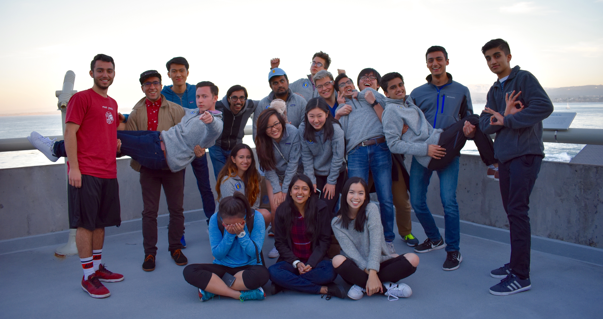

Join the Cal Hacks family.
Cal Hacks is an annual hackathon hosted by UC Berkeley students. We work year round to put on a great event in the Fall. With over 2000 hackers in attendance from around the world, we strive to create an incredible experience for all those who attend, and witness the culmination of our hard work in the outstanding projects developed at the hackathon. From designing advertisements to securing sponsors, it’s an incredible experience.
Apply Now Why Cal Hacks?
Shift gears from your usual academics into a world of planning for thousands of people for one packed weekend. From booking buses for schools across California to closing sponsors for $50k, Cal Hacks will be incredible learning experience. Directors pick up tasks that interest them and are never limited to just working on one area. Our team comes from a large variety of majors, interests, and backgrounds.

Our close ties with our tech sponsors enable directors to grow their personal network. Cal Hacks directors have a reputation for being clever self starters in the industry. Skills picked up during Cal Hacks stay useful for your entire life and our alumni have gone on to build startups through programs like YCombinator and work at giants like Google. We value personal growth and are always looking to help you realize your dreams and aspirations.
But most importantly, Cal Hacks is a family. We spend our weekdays together during work sessions and our weekends together at socials. Alumni continue to stay in touch and offer mentorship and advice to current directors. We get to know each other and support one another in our journey forward.
Opportunities at Cal Hacks.
The Cal Hacks team consists of students from an variety of majors.
SPONSORSHIPS
Are you persuasive? Constantly checking your e-mail? Reach out to various companies in order to gain the financial capital necessary to put the event on.
MARKETING
Master of Social Media? Help brainstorm marketing campaigns to get the word out to hackers. New creative ideas are welcomed.
DESIGN
Have an eye for aesthetics? Build the public face of Cal Hacks through helping with branding of logos, banners and other marketing materials.
LOGISTICS
Exceptional at making anything happen? Help plan all the fine details of the hackathon including the venue, the food, the transporation, and much more.
TECHNOLOGY
Experience in Web Dev? Understand UI/UX? Use your skills to develop a streamline registration system, or work to upgrade our website.
Recruiting Schedule.
Infosession #1: Wednesday 1/25 7-8PM @ Banatao Auditorium in SDH
Calapalooza Tabling: Thursday 1/26 @ Sproul
Infosession #2: Thursday 1/26 7-8PM @ Banatao Auditorium in SDH
Applications Due: Friday 1/27 Midnight
Coffee Chats: Week of 1/30 by Invitation
Interview Round 2: Week of 2/6 by Invitation
Apply Now
Frequently Asked Questions.
What is a “Hackathon”?
A hackathon is an event that gathers many people to make software or hardware products from scratch within some constrained time period, generally between 12 and 48 hours. Last year, Cal Hacks gathered roughly 2,000 students, and 50 corporate sponsors for 36 hours.
What is the Cal Hacks Director profile?
Directors are self starters who can manage responsibility and work well with other people. We think out of the box to make anything happen, are efficient decesion makers, and are excellent firefighters on the weekend of the event.
Do I need to have gone to a hackathon to be a director?
No, our directors range from hackathon veterans to people that have never been to one in their life.
What if I just want to hack or volunteer at the hackathon?
Currently we are recruiting for new directors but when the actual event draws closer we will reach out again for applications to hackers and volunteer at the event.
What do you do as a director?
We do what it takes to make our event happen smoothly and effectively. From securing sponsors to scheduling day-of logistics, to programming our website and designing our outward facing material, all directors work on multiple aspects of organizing the event.
What is the time commitment for being a director?
The time commitment ramps as the hackathon becomes closer in the Fall and you should be ready to commit a significant amount of time to the event.
I’m really excited about this, what can I do to make my application stand out?
If possible, come to one of our infosessions and talk to our curernt directors. It becomes a lot easier to make a decision when we have a face to pair with the online application.
Apply Now